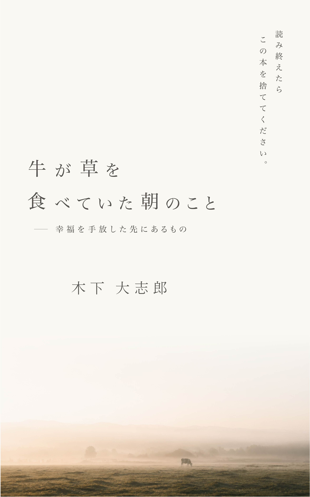

Philosophical Counseling
自称哲学者
問いを持て。
それが生きることの始まりだ。
哲学カウンセリングは、あなたの問いと向き合い、思考の深みへと共に潜る対話の場です。
"The unexamined life is not worth living."
— Socrates
What is it?
哲学カウンセリングは、心理療法でも宗教的な指導でもありません。それは、あなた自身が抱く「問い」を正面から受け取り、 哲学的な思考の道具を用いてともに考え抜く、純粋な対話の実践です。
「なぜ生きるのか」「何が正しいのか」「自分とは何者か」——そうした問いに答えはないかもしれない。しかし、問いを深めることで、 あなた自身の思考は確かに変わっていきます。
哲学は本来、書斎の中ではなく、ひとりひとりの生の只中にあるものです。
一方的なアドバイスではなく、ソクラテス的な問答を通じて、あなた自身の思考を引き出します。
あなたの考えを評価・矯正することはしません。ただ、共に問い、共に考えます。
混沌とした思いを言語化し、思考の構造を明らかにすることで、自分の立ち位置が見えてきます。
About
自称哲学者。特定の学派に属さず、古代ギリシャから現代思想まで、 思想の地形を自由に歩き回ることを信条としています。
哲学は「答えを教えるもの」ではなく「問いを磨くもの」だと考えています。 カウンセリングの場においても、私はあなたに何かを教えようとするのではなく、 あなたが自分自身の思考者になれるよう伴走することを目指しています。
「哲学は難しい」という先入観を手放し、 まず一度、言葉を交わしてみてください。
How it works
フォームからお申し込みください。最初の30分は無料の事前相談として、 どのような問いや悩みを抱えているかをお聞きします。 この場でカウンセリングを進めるかどうかを一緒に判断します。
60分の対話セッションです。あなたが持ち込むテーマは何でも構いません。 「生きる意味がわからない」「人間関係で悩んでいる」「重大な決断を迫られている」—— どのような問いも、哲学的思考の土台の上で見つめ直すことができます。
一度のセッションで完結することもありますが、継続的な対話を希望される方には 定期セッションのプランもご用意しています。 思考は一夜にして深まるものではありません。問い続けることが、哲学です。
Pricing
まず一度、無料で話してみてください。
Monthly Plan
60分 × 2回 / オンライン（Zoom）
※ お支払い方法はお申し込み後にご案内します。
Books

— 幸福を手放した先にあるもの
幸福とは何か。それを手放したとき、人は何と向き合うのか。 日常の片隅に潜む問いを丁寧に拾い上げ、思考の深みへと誘う一冊。 哲学は難解な学問ではなく、生きることそのものだということを、 牛が草を食む静かな朝の光景とともに語りかける。
読み終えたら、この本を捨ててください。
Voices
セッションを通じて、答えではなく問いが変わっていきます。
「この仕事を続けるべきか、転職すべきか」
「私はそもそも、何に従って選択をしてきたのか」
答えを出しに来たのに、問いごと変えられて帰ることになりました。でもそれが、ずっと必要だったことだったと思います。
「なぜ母との関係はこんなにうまくいかないのか」
「私は母に何を求めていたのか。そして今も、求めているのか」
責めたいわけでも、許したいわけでもなかった。ただ、問いの形が変わったことで、少し楽になった気がします。
「自分には生きる意味があるのか」
「意味は見つけるものなのか、それとも自分が作るものなのか」
問いが消えたわけじゃない。でも以前とは違う問いを抱えて、前より少しだけ軽く歩けている気がします。
FAQ
はい、むしろ哲学を学んだことのない方を歓迎しています。「哲学的に考える」とは特別な知識を持つことではなく、問いを丁寧に扱う態度のことです。専門用語を使う必要は一切ありません。
心理カウンセリングは感情や心理的な問題の回復を主な目的としますが、哲学カウンセリングは思考そのものを扱います。精神的な症状や診断の必要がある方は、専門の医療機関をお勧めします。哲学カウンセリングは、人生の問いや価値観、意味の探求に向いています。
基本的には何でも持ち込んでいただけます。「仕事を続けるべきか」「家族との関係に納得できない」「死ぬことが怖い」「自分が何者かわからない」——大きな問いも、日常の小さな違和感も、哲学的思考の入口になります。
答えを提供することはしません。哲学カウンセリングの目的は、あなたが自分自身の答えを見つけていく力を育てることです。ただし、思考の整理や問いの構造化を通じて、自分の立場が明確になることはよくあります。
セッション開始の24時間前までにご連絡いただければ、キャンセル・日程変更を承ります。24時間を切ってからのキャンセルはセッション料金の全額を申し受けます。体調不良など急な事情の場合はご相談ください。
Contact
まずは無料の事前相談から。どんな小さな問いでも、ためらわずにお送りください。
お問い合わせありがとうございます。
2〜3営業日以内にメールにてご返信いたします。